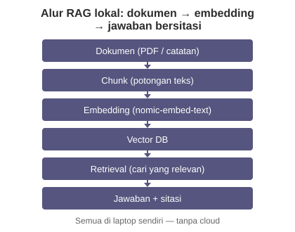

Membuat Web Pencari Dokumen Pribadi (Local RAG) dengan Open WebUI
Home > Tutorial > Membuat Web Pencari Dokumen Pribadi (Local RAG) dengan Open WebUI
Arsip
- Instal Apache, MySQL, PHP dan phpMyAdmin di Archlinux 2021
- Konfigurasi Virtual Host Apache Server Di ArchLinux 12 Jun 2021
- Cara Deploy Blog Statis ke GitHub Pages 17 Nov 2026
- Cara Daftar make.fun dengan Agent dan Biar Agent Cari Bounty Sendiri 17 Nov 2026
- Cara Berburu Bug Bounty dengan Agentic-Bug-Hunter (Gratis, AI Lokal) 18 Nov 2026
- Cara Pasang Google Analytics 4 dan Tag Manager di Blog Statis 26 Nov 2026
- Cara Optimasi SEO Blog GitHub Pages 26 Nov 2026
- Cara Ikut Bounty make.fun Pakai AI Agent 26 Nov 2026
- Cara Bikin Bot Tank di battle.training 26 Nov 2026
- Cara Bikin USB Bootable Ventoy (Kedetek di HP dan Laptop) 26 Nov 2026
- Rekomendasi Linux ISO Kecil dan Ringan untuk Laptop Lama (Kentang) 28 Nov 2026
- AI Lokal di Linux: Ollama + Open WebUI di Laptop Kentang (CPU Only) 28 Nov 2026
- Mengakses AI Lokal dari HP via Jaringan Lokal & Cloudflare Tunnel 28 Nov 2026
- Membuat Web Pencari Dokumen Pribadi (Local RAG) dengan Open WebUI 28 Nov 2026
Punya folder berisi ratusan PDF, catatan, dan dokumen — tapi susah mencari isinya? Dengan RAG lokal, kamu bisa menanyai dokumen-dokumen itu lewat chat, seperti bertanya ke pustakawan yang sudah membaca semuanya. Dan karena semuanya berjalan di laptop sendiri, tidak satu file pun naik ke cloud.
Prasyarat: Ollama dan Open WebUI sudah jalan di laptop (AI Lokal di Linux: Ollama + Open WebUI di Laptop Kentang).
Apa Itu RAG?
RAG (Retrieval-Augmented Generation) adalah cara supaya AI bisa menjawab dari dokumenmu sendiri. Alurnya: saat kamu bertanya, AI mencari dulu potongan dokumen yang relevan, lalu menjawab berdasarkan potongan itu — bukan berdasarkan hafalannya. Jadi jawabannya berakar pada isi dokumenmu, lengkap dengan sitasi ke sumbernya.

Gambar 1: Alur RAG lokal — dokumen, embedding, lalu jawaban bersitasi.
Langkah 1: Buat Knowledge Base
Di Open WebUI, klik
Workspace > Knowledge > Create, lalu beri nama — misalnya "Dokumen Pribadi" atau nama koleksimu.
Langkah 2: Upload Dokumen
Upload file
PDF, TXT, DOCX, atau Markdown ke Knowledge Base yang baru dibuat. Tunggu sampai prosesnya selesai — Open WebUI memotong dokumen menjadi potongan-potongan kecil dan mengubahnya menjadi embedding (lihat bagian di bawah).
Langkah 3: Tanyakan Dokumenmu
Buka chat baru, ketik
# lalu pilih Knowledge Base-mu, atau klik + > Attach Knowledge. Setelah itu, tanyakan apa pun tentang isi dokumenmu — misalnya "Apa saja syarat pengajuan cuti di dokumen HRD?" — dan AI akan menjawab berdasarkan dokumen tersebut.
Alternatif: tempel Knowledge Base ke model supaya selalu aktif — buka
Workspace > Models > Edit > Knowledge, lalu pilih Knowledge Base-mu.
Model Embedding Lokal
Embedding adalah cara mengubah teks menjadi angka supaya komputer bisa mencari potongan yang mirip dengan pertanyaanmu. Open WebUI memakai model embedding lokal — default-nya
nomic-embed-text (sekitar 274 MB). Kalau belum ada di laptopmu, tarik lewat Ollama:
ollama pull nomic-embed-text
lalu pilih di
Admin > Settings > Documents > Embedding Model.
Membaca Jawaban: Sitasi
Jawaban RAG disertai sitasi ke sumbernya — klik sitasi untuk membuka file di halaman yang dikutip. Ini yang membedakan RAG dari chat biasa: kamu bisa memeriksa sendiri dari mana jawabannya berasal, bukan sekadar percaya begitu saja.
Tips
- File teks biasa (PDF berisi teks, TXT, Markdown) paling bagus hasilnya — file hasil scan (gambar) perlu OCR dulu sebelum bisa dibaca.
- Kelola file di
Settings > Data Controls > Manage Files — menghapus file juga menghapus embedding-nya.
Semua proses — chat, embedding, dan dokumen — berjalan di laptop sendiri. Tidak ada data yang keluar.
Troubleshooting Singkat
- Jawaban tidak nyambung ke dokumen → cek apakah file sudah selesai diproses, lalu re-index.
- RAM habis saat RAG → embedding dan model chat berbagi RAM, jangan jalankan bersamaan dengan aplikasi berat.
Referensi
- https://docs.openwebui.com/features/workspace/knowledge/
- https://docs.openwebui.com/features/chat-conversations/rag/
- https://peira.dev/articles/open-webui-advanced/
Suka tutorial ini? Dukung penulis biar makin banyak tutorial gratis.
Dukung via Saweria